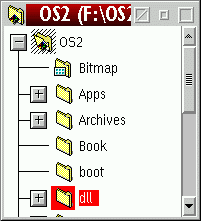
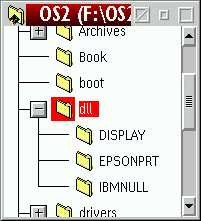

Sie haben die folgende Situation wahrscheinlich schon oft erlebt:
Sie m”chten den Baum einer Ordner-Strukturanzeige erweitern, welcher sich am unteren
Ende des Ordnerfensters befindet.

Normalerweise, wenn Sie auf das "Plus"-Zeichen neben dem Verzeichnis "dll" klicken, wird der Baum erweitert, aber Sie k”nnen dessen Inhalt nicht sehen. Dieses Standardverhalten von &os2; ist wirklich erm�dend, weil man beinahe jedes zweite Mal, wenn eine Strukturanzeige aufgeklappt wird, das Ordnerfenster anschlieáend manuell nach unten schieben muá, um die enthaltenen Objekte tats„chlich sehen zu k”nnen.
XFolder wird nun automatisch das Fenster nach unten rollen, wenn die neu erscheinenden
Elemente anfangen, auáerhalb des momentan sichtbaren Fensterbereiches zu erscheinen:

XFolder tut dies, indem es intern im Hintergrund die Strukturanzeige �berwacht, nachdem Sie auf das "Plus"-Zeichen geklickt haben, und, sobald die WPS mit dem Auff�llen der Elemente fertig ist, automatisch nach unten rollt. Diese "šberwachung" belastet das System nicht zus„tzlich, weil XFolder intern nur eine einzelne Fensternachricht abfangen muá. (Deswegen ist es auch v”llig unverst„ndlich, daá IBM diese Funktion nicht schon selbst eingebaut hat.)
XFolder wird dann das unterste angezeigte Element sichtbar machen, es sei denn, der Baum unterhalb des Ordners, auf den Sie gerade geklickt haben, enthielte zu viele Elemente, als daá sie alle in das Fenster paáten. In einem solchen Fall w�rde XFolder das Element, das Sie erweitert haben, an die oberste Stelle des sichtbaren Fensterbereiches verschieben.
Es ist wahrscheinlich am besten, Sie probieren diese Funktionen selbst aus, um sich mit ihr vertraut zu machen. Das Verzeichnis OS2 ist hierf�r ein guter Kandidat. Auch wenn dieses Verhalten zun„chst vielleicht ein wenig irritierend ist, werden Sie es nach einer Weile nicht mehr missen wollen.
Diese Funktion l„át sich immer noch in den
Globalen Einstellungen abstellen.